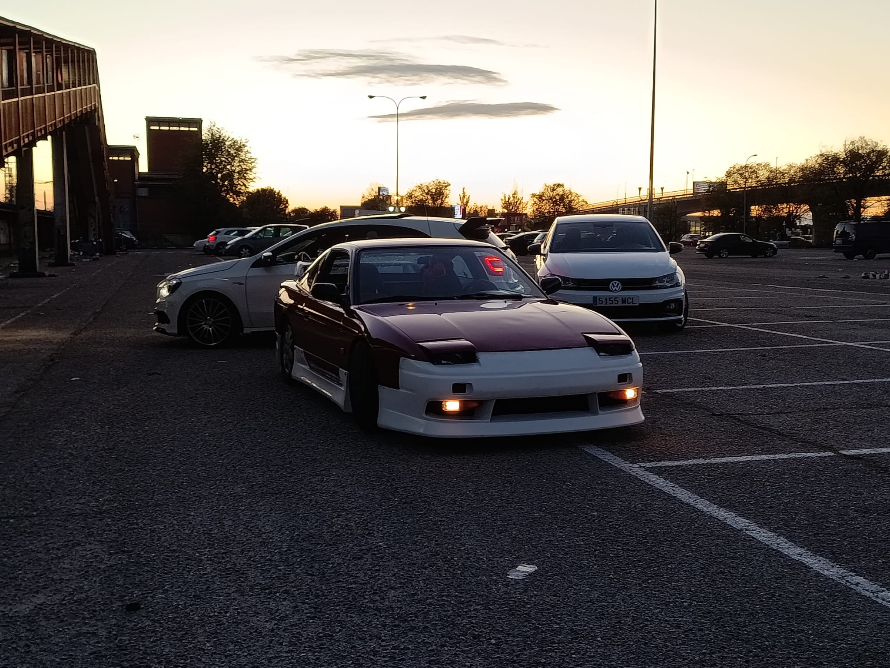
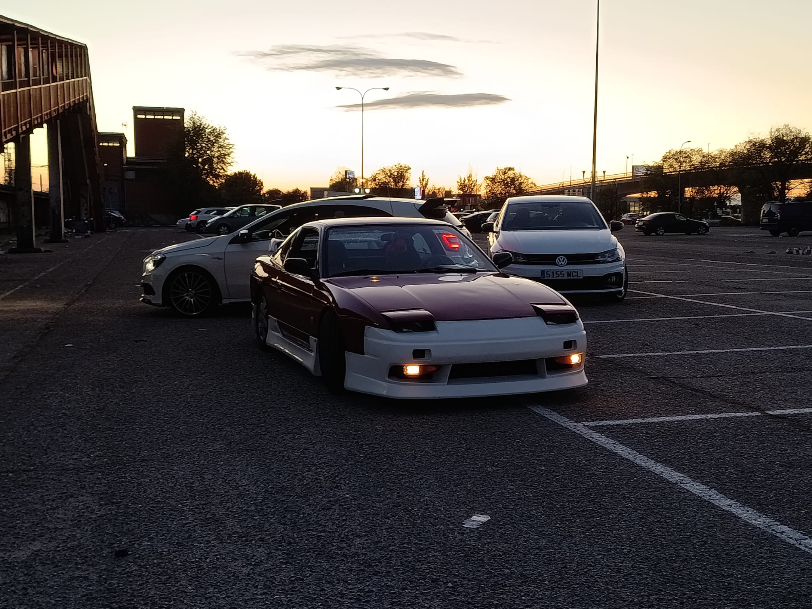

Behind the Lens
Stories and thoughts about my photography process, inspiration, and lessons I’ve learned along the way.
Professional and artistic photography. Capture your moments with style and creativity. My gallery features unique shots that tell a story and evoke emotions.
Explore my work, learn about my journey, and follow me on social media to keep up with the latest updates and exclusive content.
Every picture is a canvas where light, colors, and emotions meet. Here you’ll find a blend of portrait, street, and abstract photography, curated to show not just images but experiences.
Hi! I’m Daniel, the creator of DDE-Photos.com. Photography has been my passion since I was young, and I love capturing unique perspectives that highlight emotion, energy, and style.
Over the years, I’ve worked with different people, locations, and ideas. Every photo is more than an image; it’s a memory, a story, and an expression of creativity.
Beyond photography, I’m passionate about exploring new cultures, traveling, and connecting with people. These experiences inspire my work and add depth to the stories I capture.


 


Stories and thoughts about my photography process, inspiration, and lessons I’ve learned along the way.
A guide to some of my favorite spots for capturing unique and breathtaking photos.
Reviews of my photography equipment, plus tips and tricks that can help you improve your own shots.
After watching the video, three points really stood out to me. First, RAW files keep all the information from the camera sensor without compression or automatic adjustments. Second, JPEG files come already processed by the camera with contrast, saturation, and sharpness applied. And third, RAW gives you much more flexibility when editing, while JPEG is more limited because some information is lost during compression.
Photographers usually choose RAW when quality really matters. For example, at a wedding, during a professional photoshoot, or when photographing a landscape where recovering detail in highlights and shadows is important. On the other hand, JPEG is the better option for more casual or fast situations—like taking photos at a football game with friends or snapping something for social media—where smaller file size and speed are more useful than maximum quality.
When I edited both formats, the difference was obvious. With RAW, I had a lot more freedom to fix exposure, colors, and shadows without damaging the picture. With JPEG, as soon as I tried stronger edits, the image started to lose quality, became noisy, or looked more artificial.
The difference was obvious: with RAW I had a lot more freedom to fix exposure, colors, and shadows without ruining the picture. With JPEG, as soon as I tried to make stronger edits, the image lost quality, got noisy, or looked more artificial.

One of my favorite scenes from Gran Turismo is the sequence where Jann Mardenborough drives in his first professional race after being selected from the GT Academy. Visually, this scene perfectly captures both the excitement and tension of a gamer stepping into the real racing world.
The framing plays a huge role in showing Jann’s emotional state. Inside the cockpit, the camera is extremely tight on his face, emphasizing his concentration and nervousness. The close-ups make the viewer feel trapped in the car with him, hearing every sound and vibration. In contrast, when the camera cuts outside the car, the frame suddenly opens up — wide shots of the track and cars speeding by highlight how small and vulnerable he is in that massive, dangerous environment.
The composition often places Jann in the center, surrounded by blurs of speed and chaos. This visually represents how he’s trying to stay focused while everything around him is moving at high intensity. The lighting also shifts depending on his emotions — inside the car it’s darker, full of metallic reflections, while exterior shots are bright and sunlit, symbolizing the world he’s trying to conquer.
The camera movement is what gives the scene its power. The film constantly switches between smooth drone shots, fast tracking shots, and shaky in-car footage. This dynamic mix mirrors the rhythm of the race itself — moments of calm precision interrupted by bursts of danger. One of the most effective movements is when the camera follows the car from behind and then swings around to the front during an overtaking moment, making the audience feel the thrill and risk of racing firsthand.
Overall, the visual language of this scene turns what could be a simple race into a story of transformation and courage. Through framing, composition, and movement, we don’t just watch Jann race — we feel his fear, excitement, and determination.

I chose the final race scene from Gran Turismo (2023). The sounds include roaring engines, gear shifts, screeching tires, the crowd cheering, tense background music, and short bursts of dialogue through radio communication. These elements build excitement and tension, matching the emotional intensity of the moment. Without the sound, the scene would lose its adrenaline and emotional payoff. The blend of engine roars and music makes this scene unforgettable.
I chose the final race scene from Gran Turismo because its sound design captures exactly what makes motorsport so thrilling. Every rev of the engine, tire screech, and gear shift is perfectly balanced with the soundtrack, creating a mix of realism and cinematic tension. The radio chatter between Jann and his team adds a personal touch, reminding us that behind all the noise, there’s a real person fighting for his dream.
What stands out the most is how the sound builds intensity—the deeper engine growls, the rising music, and the sudden silences before key turns make you feel like you’re in the driver’s seat. If the sound were simplified or removed, the race would lose its emotional power and sense of speed. This scene’s sound design transforms it from just a car race into a full emotional experience, showing how passion, risk, and victory can all be felt through sound alone.


You got a green screen and you’re trynna figure out how to not mess the whole thing up? Don’t stress, it’s honestly pretty simple once you understand the main basics
First thing, lighting is the boss here your green screen needs to be flat clean and lit evenly. no wrinkles, no shadows, because even a tiny dark spot can ruin the key, later leave a bit of space between you and the screen too otherwise you get that ugly green outline on your hair or shoulders and it looks super fake
After that make sure you are lit separately from the screen, you don’t want the green bouncing onto your skin or clothes, keep the lighting soft and even and if you can use a decent camera, shaky low res footage makes keying way harder than it needs to be
Then you just need the right tools tons of programs can remove green backgrounds adobe premiere after effects resolve even free stuff like gimp or davinci resolve all do the job pretty well, but i personally used cap cut since it's easier for starters
Once you get these basics down you can start doing whatever you want switching backgrounds putting yourself on a beach, space, a movie scene, anything green screen feels like magic when it actually works right

the artist is Juice WRLD and the album is Goodbye & Good Riddance dropped in 2018 mostly emo rap and melodic trap that sad hip hop vibe he’s known for
the whole album feels like Juice just dumping all his heartbreak and mistakes into songs you can tell he recorded a lot while really hurting it sounds super raw and honest nothing overproduced just straight emotion turned into catchy melodies what makes it stand out is that it actually makes you feel what he felt without any fluff just real vibes
beats are simple soft guitars chill synths clean drums nothing crowded everything leaves room for his voice 808s hit hard hi hats do the classic trap bounce loops are clean and minimal
vocals sit really forward like he’s talking right next to you a little reverb gives that lonely night vibe lows are tight highs are crisp mix is balanced even if a bit rough but it fits the mood
it’s compressed like most trap stuff but not totally squashed there are softer singing moments so tracks breathe a bit
not many fancy effects just little reverb tiny delay sometimes maybe slight distortion recordings are clean and the noise floor is low
most songs are mid tempo trap but melodies shift enough to keep it from feeling samey lots of triplet hi hats simple rhythms that just work
this album hits like thinking about your ex at 2am when you know you shouldn’t but you still do it’s emotional but still catchy so you end up vibing while lowkey dying inside if you like emotional rap or artists like Trippie Redd Lil Peep or Kid Laroi you’d probably love it
Do you want to collaborate, book a session, or simply say hello? Feel free to reach out.
My Social Media
Social media is where I share behind-the-scenes moments, previews of upcoming projects, and connect with people who enjoy my work.